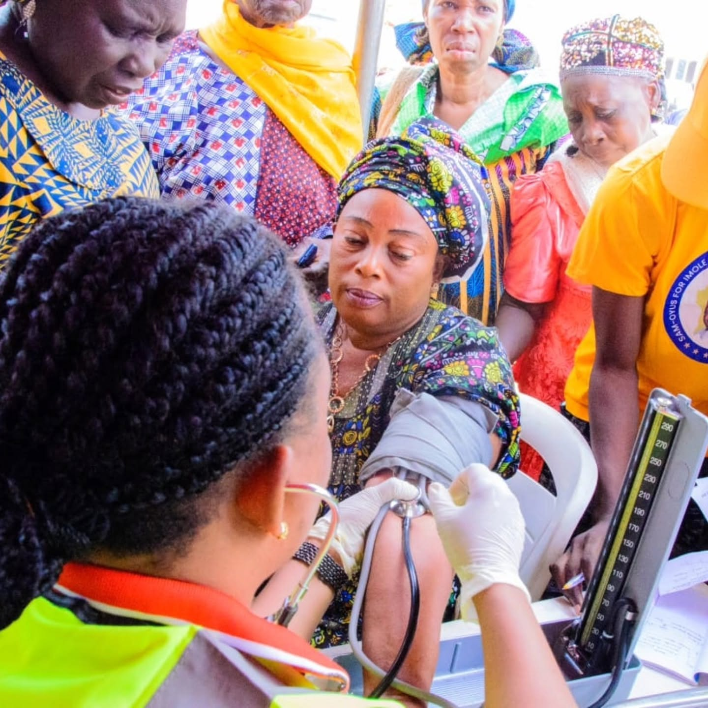
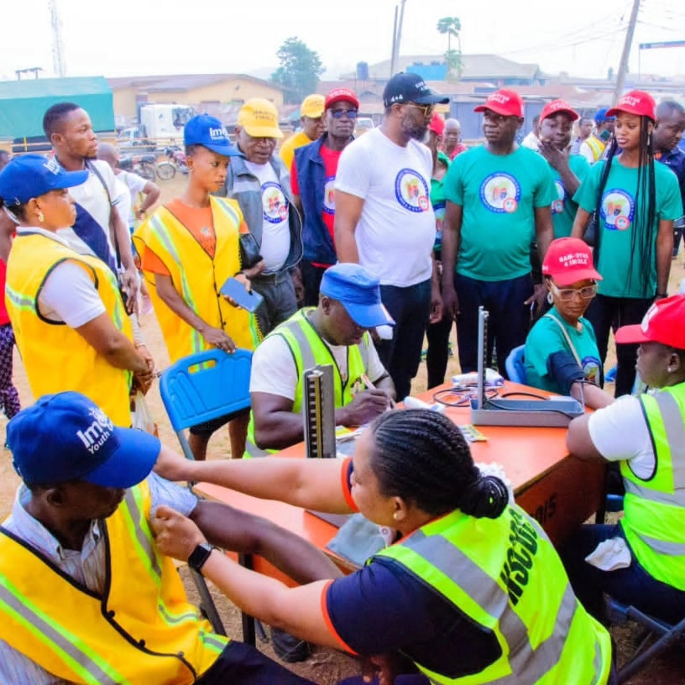
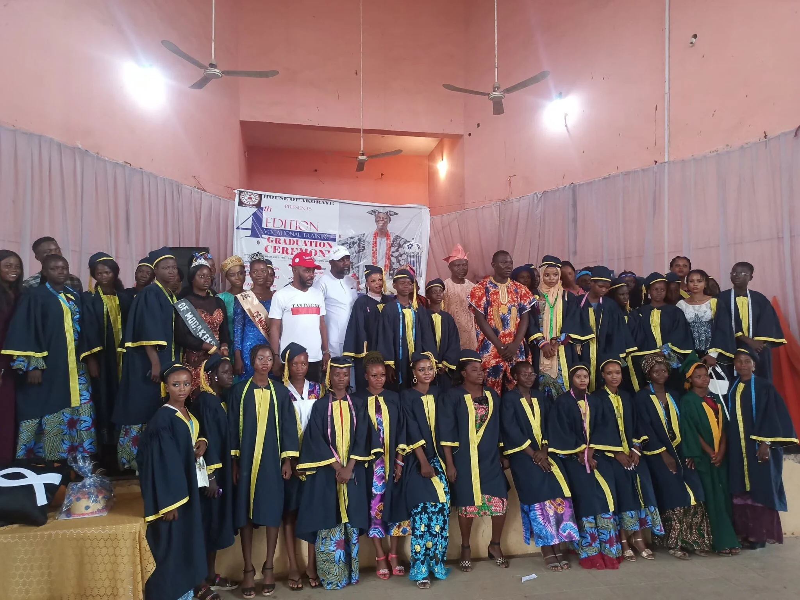

Turn opportunity into independence.
Equip people and communities with practical skills, tools, learning resources, enterprise support and partnerships that can create lasting livelihoods and measurable social impact.
NIGERIAN NON-GOVERNMENTAL ORGANISATION • COMMUNITY-LED IMPACT
Sam Oyus Foundation (SOF) is a Nigerian non-governmental, non-profit organisation working from the grassroots to expand opportunity through education, skills, enterprise, agriculture, health and community development. Our service vision reaches all 36 states and the FCT, with a long-term ambition to extend proven programmes across Africa.
One portal for projects, proposals, applications and opportunity alerts.
WHO WE ARE
SOF was publicly inaugurated in Modakeke, Osun State in 2023. Its documented work and public commitments span youth development, vocational skills, education, entrepreneurship, agriculture and community wellbeing.
Equip people and communities with practical skills, tools, learning resources, enterprise support and partnerships that can create lasting livelihoods and measurable social impact.
Build scalable community programmes that respond to local needs, strengthen human capital and connect underserved communities with resources, knowledge and opportunity.
Identify need → build capacity → provide tools and opportunity → support enterprise and independence → measure and report impact.
OUR WORK IN ACTION
Past activities and independently reported programmes show SOF translating its empowerment philosophy into practical community support.

SOF-supported community health activity bringing basic screening and health attention closer to people at grassroots level.

Community-facing outreach reflects SOF's growing commitment to health and wellbeing alongside its education and empowerment programmes.

In 2023, SOF supported House of Akoraye vocational trainees and provided working tools/equipment to outstanding graduates in fields including fashion, leatherwork, shoemaking, hairstyling and catering.
Public reporting documented SOF distributing 5,000 writing materials to primary-school pupils in Modakeke in October 2023.
At its 2023 launch, SOF announced a ₦100 million short-, medium- and long-term commitment for youth, farmers and related empowerment programmes. This is an announced commitment, not a claim of full disbursement.
SOF's vocational support paired training with practical working equipment so selected graduates could begin applying their skills independently.
PROJECT & INTERVENTION DATABASE
Browse investable concepts and download a proposal before submitting a partnership interest.
FOR SPONSORS & DEVELOPMENT PARTNERS
Fund a defined programme with a budget, timeline, beneficiary group and reporting plan.
Sponsor education, skills, agriculture, enterprise, health or community interventions.
Provide ICT equipment, vocational tools, agricultural inputs, learning resources or facilities.
Bring expertise in technology, M&E, health, business, agriculture, research or programme delivery.
GRANT-OPPORTUNITY ALERTS
Users can subscribe to opportunities. Administrators can later populate this database with verified calls.
SPONSOR DASHBOARD
TRANSPARENCY & PARTNERSHIP
SOF is developing a partnership model designed for donor due diligence, project approval, grant matching, implementation, monitoring and donor reporting.
Programmes are designed around community realities and local delivery capacity.
We distinguish completed activities from planned programmes and publish measurable results as documentation becomes available.
SOF welcomes NGOs, foundations, CSR teams, development agencies, universities and technical partners.
Our national and future African ambitions are framed as growth goals, not as claims of existing operations everywhere.
READY TO PARTNER?
The portal supports sponsor registration, project applications and opportunity alerts. Before production launch, connect the portal to SOF's verified partnership email and operational review process.